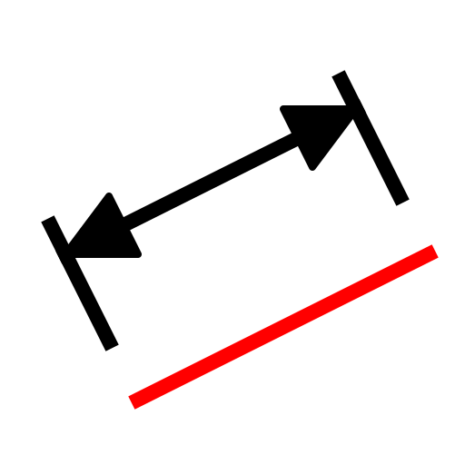
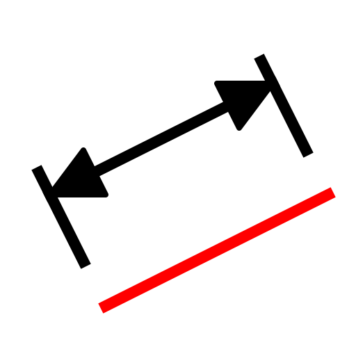
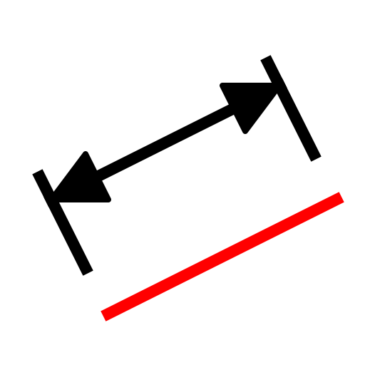
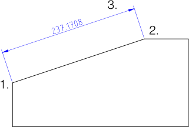

Menu: Dimension - Aligned
Shortcut: D, A
Commands: dimaligned | da

Description:
Creates aligned dimensions. Aligned dimensions usually measure the length of
an existing line. The dimension line is always parallel to the line between the
two chosen points 1. and 2.:

Procedure: